Authoring the Gurukul Hub
Everything a designer needs to build, populate, write and test the hub. No code, no programmer, nothing typed from memory.
Project Astra · Unity 6.4 · written for the tools as they stand on 3 September 2026
Sections The eight words and Your four tools take five minutes and give you the whole vocabulary. Then jump to whichever job you have. The worked example at the end builds a complete new Gurukul from an empty folder, step by numbered step, if you would rather learn by following along.
0What you are making
The hub is the Gurukul between battles. She walks around it freely, talks to people, looks at things, and eventually leaves for the next fight. It is not a grid and it is not turn-based — she walks where she likes, and the camera follows her.
A finished hub is five kinds of thing stacked on each other:
| Thing | What it is | Example |
|---|---|---|
| Rooms | The places, made of your artist's images | the courtyard, the archery field, a student house |
| Things in them | Props she can walk into, and objects she can act on | a tree, a well, a noticeboard, a door |
| Conversations | What gets said, including branching | Arjun's training talk, with three answers |
| Visits | One trip to the hub: who is there, where, saying what | the first morning; the day after the raid |
| Quests | What she is meant to do on that visit, in order | talk to five students, then collect your report card |
You build them roughly in that order, and you can test any of them on its own at any point without playing what comes before.
0The eight words
These are the only terms you need. They are the words the tools use, so learning them here means never being surprised by a label.
| Word | Means |
|---|---|
| Room (also “place”) | One walkable space. The courtyard is a room. A student house interior is a room. She is in exactly one at a time, and the camera never shows past its edges. |
| Visit | One trip to the hub. A visit says which room she starts in, who is standing where, what each of them says this time, and which quest is running. Visit 1 and Visit 4 use the same rooms and differ entirely in their visits. |
| Quest | An ordered list of stages. Only one stage is active at a time; finishing it starts the next. The active stage's text is what she reads on screen. |
| Conversation | An authored script: lines, who says them, and any branching. One conversation is one asset with one name. |
| Interactable | Anything she can walk up to and act on. Shows a prompt like Inspect · noticeboard. A door is one. A person is one. A tree can be one. |
| Event | A scripted moment where the game takes over: someone walks across the yard, a line plays, the camera moves. She has no control while one runs. |
| Gate | A named switch that is open or shut. A door can be shut until a gate opens. You decide what gates exist simply by naming one. |
| Signal | An announcement that something happened, which a quest stage can be waiting for. Also named by you. |
A gate is a state — it stays open. Use it for “the north road is passable now”. A signal is a moment — it fires once. Use it for “she finished the quiz”. If a stage is waiting for something to happen, that is a signal. If a door needs to know whether something has happened, that is a gate.
0Your four tools
Everything lives in four places. Three are windows on the Project Astra menu; the fourth is a panel inside the Scene view.
Opening the hub for work
- Open the Hub scene. In the Project window, Assets ▸ Scenes ▸ HubExploration. Double-click it.
- Find the Hub panel. Look at the top-right corner of the Scene view. If you only see a small chip reading Hub, click the little arrow on it to expand it. You can drag it anywhere in the Scene view.
- Pick a room. Use the Room dropdown. Picking one hides every other room and frames the camera on it — otherwise all the rooms sit on top of each other at the origin and nothing makes sense.
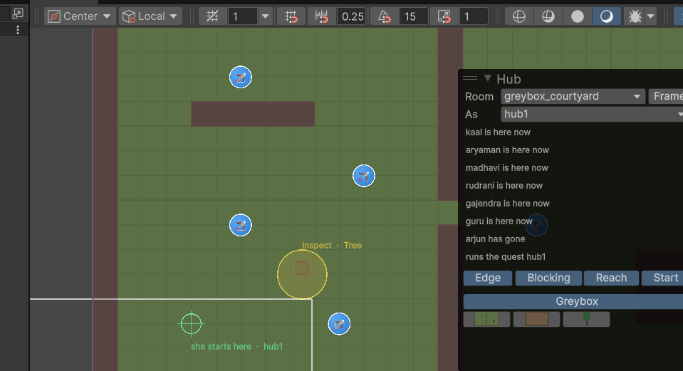
hub1 is standing in the courtyard, and the
list underneath says what this visit changes from the one before. Edge, Blocking,
Reach and Start turn on the coloured guides. The row of thumbnails at the bottom is your
palette.Isolating a room, choosing a visit to view, and toggling the guides are all just your view. They are never saved into the scene and never show up as a change to commit. Work however you like.
1Art from your artist
Your artist gives you PNGs. You put them in a folder. They appear in your palette. That is the whole process — you never open an import inspector.
What to ask your artist for
| Rule | Why |
|---|---|
| 32 pixels = 1 tile | Everything in the game is measured in tiles. A 4-tile-wide hut is 128 px wide. |
| PNG with real transparency | Anything that is not a floor needs to sit on top of the floor. |
| Trim the empty space | The image's bottom edge is treated as where the thing stands. Empty pixels underneath push it up off the ground. |
| Floors as one big image | A whole courtyard floor as a single seamless painting is easier to place and looks better than tiles. |
| No baked-in shadows onto the floor | She walks between props; a shadow painted into the floor cannot move. |
Where to put them
Make a folder under Assets/Gurukul/ and drop the images in. The folder name becomes the palette category, so file them the way you want to find them:
Ground, Grounds or Floors is treated as a floor she walks over.Drop the files in, wait a second, and open the Hub panel. There is a new category tab with your art in it. Nothing else was needed: the size, the crispness, and the fact that it stands on its base were all set for you the moment the file arrived.
The automatic settings are applied once, when the file first arrives. If you deliberately change something afterwards, re-importing will not undo it.
2A room from scratch
A room is two things that have to agree: a record saying it exists and how big it is, and an object in the scene that is the actual place. The Hub Editor makes the record; the scene holds the place.
Step one — make the record
- Open Project Astra ▸ Hub Editor and click Rooms.
- Click + New. A room appears called something like
new_location. - Set Location Id. This is the name everything else refers to it by. Lower
case, underscores, no spaces:
gurukul_courtyard. - Set Display Name. What you want to read in the tools: Gurukul Courtyard. Not shown to players.
- Set Tile Width and Tile Height. The size of the room in tiles. This is the hard edge of the world: the camera never shows past it and she cannot walk out of it.
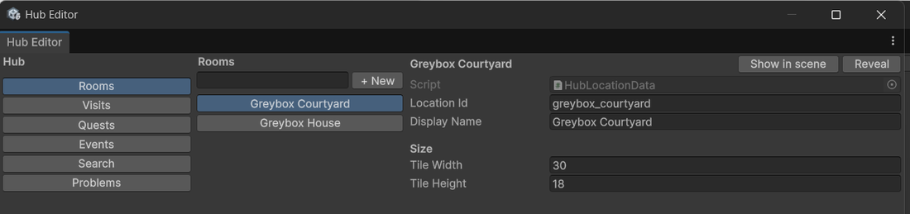
The camera shows 15 tiles across and about 8.5 down. A room smaller than that leaves the camera with nothing to hold on to and shows the void past the edges. If your art is smaller, do not shrink the room — pad it out with impassable scenery (a treeline, a wall, a cliff) so the room stays at least 15 × 9 and she simply cannot reach the filler.
Step two — make the place in the scene
The quickest way is to let the tools notice it is missing:
- Go to the Problems tab. It will be complaining: no room in the Hub scene is this place, so it cannot be shown.
- Click Make an empty room for it. That creates the object in the scene, with its groups, already pointing at the record you just made.
- Go back to the Scene view and pick your new room in the Room dropdown. You will see a blue rectangle showing its edge, with its name and size written under it. Empty, but real.
A room is organised into four groups, and the palette puts things into the right one automatically:
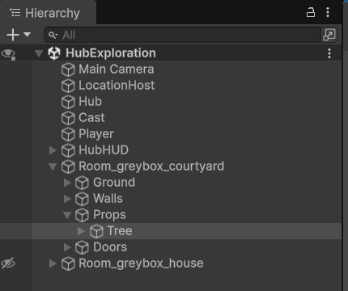
| Group | Holds |
|---|---|
| Ground | The floor. Drawn under everything. |
| Walls | Invisible blocking shapes: the room's fences, building footprints, the river bank. |
| Props | Everything else you place. Trees, buildings, benches, noticeboards. |
| Doors | The ways out. |
Step three — lay the floor
- In the Hub panel, click the category tab your floor art is in (probably Ground).
- Click the thumbnail of your floor. Its settings appear underneath. Check that Is reads Ground.
- Click in the Scene view at the room's bottom-left corner. A floor is held by its corner, so clicking at (0, 0) lays it flush with the room's edge.
You will see a ghost of the image following your mouse before you click, so you always know what you are about to get. Press Esc or right-click to put it down.
Step four — place things
- Click a category tab, then a thumbnail.
- Set what it is. Is should read Object for anything that stands on the floor. Stops her decides whether she can walk through it. Footprint is the size of the part she cannot walk through, in tiles, measured from the base.
- Click where it should stand. The click marks the spot the thing stands on — not its middle, not its corner. Where you click is where its feet go.
- Hold Shift while clicking to keep placing the same thing. Good for a row of fence posts or a stand of trees.
- Tick Keep to hand on anything you use constantly. It gets its own Favourites tab. The last few things you placed are always in Recent.
You cannot place something half a pixel off, so the art never looks blurry or jittery. You do not have to be careful about it.
Depth sorting is automatic too: something standing further down the screen is drawn in front. She walks behind a tree's canopy and in front of its trunk without you doing anything. Move something and its depth follows.
Step five — walk it
Do not wait until the room is finished. In the Hub panel, click Play next to the As dropdown. The game starts, in this room, and you can walk about. Stop, adjust, go again.
3What blocks her
Three things stop her, and you should know which is which:
| What | How you make it |
|---|---|
| The room's edge | Automatic. The room's tile size is the boundary. You never fence the outside of a room. |
| A prop's footprint | Tick Stops her on the palette entry before placing it. The blocked box sits under the base of the art, not around all of it. |
| A shape you draw | For building walls, river banks and cliff edges, where the blocking does not match one prop. Covered below. |
Turn on Blocking in the Hub panel and every blocked area is drawn in red. This is the single most useful guide while building — a gap you did not mean to leave is obvious, and so is a doorway you accidentally sealed.
Drawing a blocking shape
- In the Hierarchy, expand your room and click the Walls group.
- Right-click it and choose Create Empty. Name it for what
it is:
Wall_hall_north. - Set its Layer to
HubSolid— the dropdown at the top right of the Inspector. This is what makes it block. - Click Add Component and add a Box Collider 2D.
- Click Edit Collider and drag its handles until the red shape covers what should be solid.
Block the base of a building, not its roof. Block the trunk, not the canopy. If you block the whole image, she has to walk around the top of a tree, which looks wrong and feels worse.
4Doors between rooms
A door is an interactable that moves her to another room. It is authored in the room it stands in.
- Make the second room first (section 2), so there is somewhere to go.
- In the Hierarchy, select the Doors group of the room you are leaving, right-click,
Create Empty. Name it
Door_to_hall. - Add Component ▸ Door Interactable.
- Add Component ▸ Circle Collider 2D, and tick Is Trigger. Set
Radius to
1. This is the area she has to be standing in. - Fill in the door. Every name is a dropdown:
- Name — this door's own id, e.g.
to_hall. - Stands at — where in the room it is, in tiles.
- Reads as — the prompt verb. Enter for a way in, Leave for a way out.
- Leads to — the room on the other side. Leave this empty on an exit and she goes back through whichever door she came in by, which is how six student houses share one interior.
- Arrives at and Facing — where she appears in the other room. Put it just in front of the matching door, not on top of it.
- Name — this door's own id, e.g.
- Make the matching door in the other room, pointing back.
- Turn on Reach in the Hub panel. Each door draws a yellow circle with its prompt beside it. Walk through both ways with Play.
Set Shut until to a gate name. A new field appears: Says while shut. Put a conversation there — a locked door she can walk up to owes her a reason. The field only appears once the door can actually be shut, so you cannot forget it.
5Something to look at
This is the shortest loop in the whole tool, and worth learning first.
- Place the prop. A noticeboard, say. Section 2, step four.
- With it still selected, look at the bottom of the Hub panel. It names what you have selected and offers Make it something she can look at. Click that.
- That is it. It now has a name taken from the object (
noticeboard), an area she has to stand in, and a prompt. Turn on Reach and you will see the yellow circle. - Give it something to say. In the Inspector, find Conversation Id and pick one from the dropdown — or pick New Conversation…, type a name, and one is made for you and registered where the game will find it.
- Hear it. Section 12.
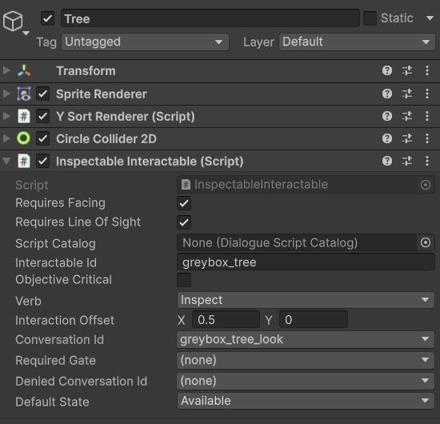
| Field | What it does |
|---|---|
| Interactable Id | Its name. Quests point at this to mark it or to know she looked at it. |
| Verb | The prompt word: Talk, Inspect, Enter, Leave, Report, Depart. |
| Conversation Id | What plays when she acts on it. |
| Required Gate | Leave empty for something always usable. Set it and the object is locked until that gate opens. |
| Denied Conversation Id | What it says while locked. |
| Default State | Available normally. Inactive hides it from her entirely. A visit can override this per object. |
| Objective Critical | Tick for something a quest stage points at, so it wins over a nearby door when both are in reach. |
| Requires Facing | Untick for something reachable from any side — a wide counter, a noticeboard you can read from an angle. |
| Requires Line Of Sight | Untick for something visible over an obstacle it stands behind. |
Changed your mind? The Hub panel offers Not interactive any more, which takes back exactly what it added and leaves the prop alone.
6Conversations
Open Project Astra ▸ Conversations.
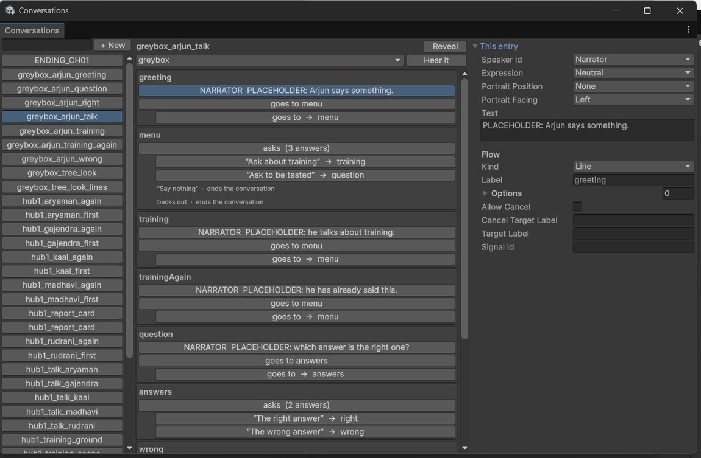
Writing a straight conversation
- Click + New and rename it in the Inspector's Script Id field.
Lower case with underscores:
gurukul_madhavi_first. - Add a segment. A conversation is made of segments, and a segment holds lines. One segment is enough unless you want to change the background or the typing speed part-way. Expand Segments in the Inspector and set the size to 1.
- Check the segment's Text Speed reads
-1so it uses the game's normal speed, and leave Auto Advance Delay at0so it waits for the player. A speed of0means the text never appears. - Add lines. For each one: pick a Speaker Id from the dropdown, and type the Text.
- Click a line in the middle pane to edit it on the right without hunting through the Inspector.
If a line has no Speaker Id, the game cannot decide whose portrait to show and skips the line without complaining. For narration with no speaker, choose Narrator from the dropdown — do not leave it blank. This is the single most common reason a conversation "does nothing".
The fields on a line
| Field | What it does |
|---|---|
| Speaker Id | Who says it. Narrator for text with no speaker. |
| Expression | Which portrait mood to use. |
| Portrait Position | Which side of the screen the portrait sits on. |
| Portrait Facing | Which way it looks. Art faces left by default; Right flips it. |
| Text | What is said. |
| Kind | Line speaks. Choice asks. Jump goes somewhere. Signal announces something happened. |
| Label | A name for this entry so a choice or a jump can target it. Only needed if something points here. |
Attaching a conversation
The same conversation can be reached three ways, and you will use all three:
| Where | Set | Use for |
|---|---|---|
| On an object in the room | Conversation Id on the interactable | Something that always says the same thing — a signpost, a shrine |
| On a person, per visit | Conversation Id in the visit's cast entry | What a character says this visit. The usual case. |
| Inside an event or a quest stage | a Play Conversation action, or a stage effect | Something said at her rather than because she pressed a button |
7Choices and branches
Branching is built from two things: a Label on the entry you want to reach, and a Target Label on the thing that reaches it. There is no wiring and no graph to keep in sync.
Asking a question
- Add a line and set its Kind to Choice.
- Give it a Label so you can come back to it —
menuis the usual name for a topic list. - Expand Options and add one per answer. Each option has:
- Label — the words on the button.
- Target Label — where picking it goes. Leave it empty to end the conversation.
- Option Id — a name so the game can remember she has picked it.
- Ask Once — tick to grey it out after it has been taken, rather than removing it. A topic list must not reshuffle under the player.
- Repeat Target Label — where to go instead if she picks it again.
- Write the branches. Add lines further down, and give the first line of each branch the Label that the option targets.
- Send each branch back. At the end of a branch, add a line with Kind set to
Jump and Target Label set to
menu. Now she returns to the question.
Reading the flow
The middle pane splits the conversation at every label and shows you the runs and the arrows out of each. Every arrow is a button — click it and you jump to that run. This is how you check a branching conversation without reading it top to bottom.
It also tells you when the branching is broken, in plain words:
| What it says | What to do |
|---|---|
| nothing is labelled ‘x’ | Something branches to a label that does not exist, so the conversation will just stop there. Either fix the target or add the label. |
| … lines come after it has already branched away, so nothing reaches them | You wrote lines after a jump or a choice in the same run. Give the first one a label, or move them. |
| two entries are both labelled ‘x’ | Only the first can ever be reached. Rename one. |
| “Say nothing” · ends the conversation | Not a problem — just telling you that answer has nowhere to go. Fine if intended. |
Set Repeat Entry Label on the conversation itself. The first time it plays from the top; every time after, it starts at that label. One asset holds both the full exchange and the short version.
8Visits and the cast
A visit is one trip to the hub. This is where you decide who is there and what they say.
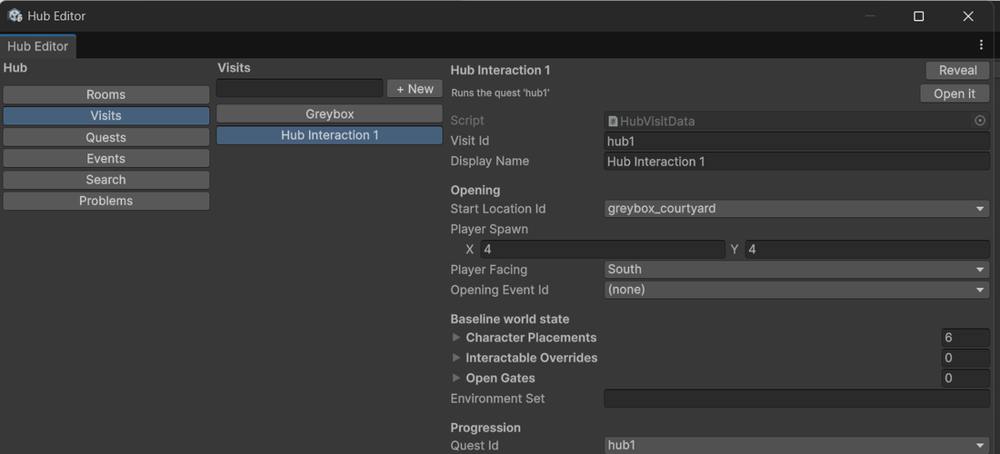
Making one
- Hub Editor ▸ Visits ▸ + New.
- Set Visit Id —
gurukul_2— and a Display Name for yourself. - Opening. Start Location Id is the room she wakes up in. Player Spawn is where she stands, in tiles. Player Facing is which way she looks. Opening Event Id is a scripted moment that runs before she gets control — leave it empty to start in plain free exploration.
- Cast. Expand Character Placements and add one entry per person present:
- Character Id — who, from the dropdown.
- Location Id — which room they are in.
- Position — where they stand, in tiles.
- Facing — which way.
- Conversation Id — what talking to them opens this visit. Leave it empty and they are present but not worth approaching.
- Quest Id — which quest runs. Section 9.
Placing the cast by dragging
Typing coordinates is the slow way. Instead:
- In the Scene view, pick the room in Room and your visit in As.
- The cast appears, standing where the visit says — built by the same code the game uses, so what you see is what will be there.
- Drag one. When you let go, the visit is updated. Pixel-snapped, and the scene file is never touched.
Under the As dropdown is a list of what this visit does differently from the one before it: kaal is here now, arjun has gone, madhavi says something else, ‘north_road’ starts open. Understanding Visit 9 does not mean reading Visits 1 to 8.
The rest of a visit
| Field | What it does |
|---|---|
| Interactable Overrides | Start a particular object in a different state this visit — Gated until something happens, or Inactive so it is not there at all. |
| Open Gates | Gates that start open. Everything not listed starts shut. |
| Environment Set | Names the dressing for this visit — a post-flood state, say. A note for now. |
| Departure ▸ Destination Map Id | The battle this visit leads to. Always chosen, never guessed. |
| Departure ▸ Mode | Automatic: the closing event runs straight into the battle. Confirmed Interaction: she walks to something and confirms. |
| Departure ▸ Departure Target Id | Confirmed mode only — the object that offers Depart once every stage is done. |
The people you can place are the game's characters, and they are defined in Project Astra ▸ Data Hub — their name, their portraits, their walking sprite. If someone you need is not in the Character Id dropdown, make them there first. The hub only decides where they stand and what they say.
9Quests and stages
A quest is what she is meant to be doing. One stage is active at a time, and its text is what she reads on screen.
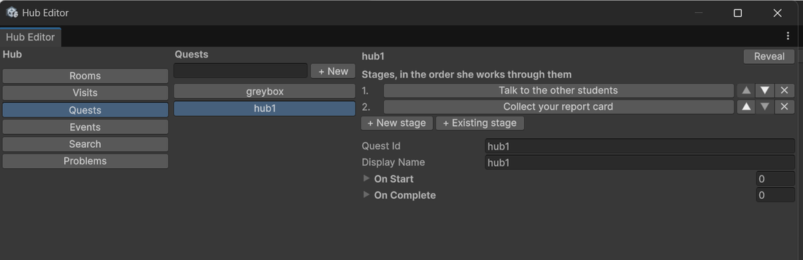
Making one
- Hub Editor ▸ Quests ▸ + New. Set Quest Id and Display Name.
- Click + New stage. It is made and added to the end.
- Click the stage to open it and fill it in:
- Objective Id — its name.
- Display Text — what she reads. Short and active: Talk to the other students.
- Show Counter — tick to show 0/5 beside the text.
- Set Completion — what finishes it. See below.
- Reorder with the arrows until the sequence is right.
- Point the visit at the quest — Quest Id on the visit. A visit's page has an Open it button to jump straight to its quest.
What finishes a stage
Completion has a kind, and the kind decides what you fill in:
| Kind | Finishes when | You give it |
|---|---|---|
| Talk Condition | Conversations have been heard through to the end | One entry per target: the Conversation Id that counts, and the Character Id so the marker knows who to hover over. Several entries make the 0/5 counter. |
| Inspect Condition | Objects have been looked at | A list of Interactable Ids. One id is a single object; several make a set. |
| Signal Condition | Named signals have been raised | A list of signal names. Use this for anything that is not a conversation or an object. |
| Immediate Condition | Straight away | Nothing. For a stage whose only job is to run its effects and move on. |
What a stage does
On Start runs the moment the stage becomes active; On Complete runs when it finishes, before the next stage is announced. Each is a list, and each entry has a kind:
| Kind | Does |
|---|---|
| Play Dialog Event | Says something — the stage's own line, not a character's. |
| Set Flag Event | Opens or shuts a gate. |
| Play Authored Event Event | Hands over to a scripted moment, which owns the scene while it runs. |
She gets a marker over whatever the active stage is still waiting on, worked out automatically. Only set Marker Target Ids if you want to point somewhere else instead.
The validator checks this: a marker over something the visit never places, or over an object no room declares, is reported before you play.
10Scripted moments
An event is a moment where the game takes over: someone walks over, says something, the camera moves, the world rearranges. She has no control while it runs.
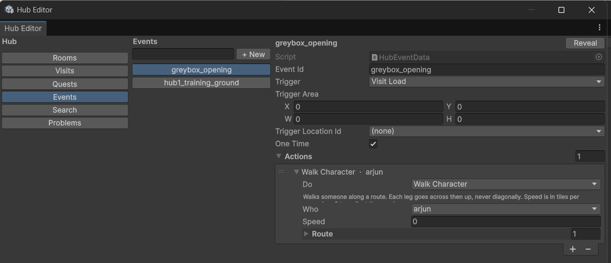
Making one
- Hub Editor ▸ Events ▸ + New. Set Event Id.
- Pick a Trigger:
- Visit Load — runs as the visit opens, before she gets control. Point a visit's Opening Event Id at it.
- Area Entered — runs when she walks into a patch of ground. Set Trigger Area (x, y, width, height in tiles) and Trigger Location Id.
- Called — runs when a quest stage or another event asks for it.
- One Time — leave ticked for anything with consequences; untick for a repeatable bark.
- Add actions with the + at the bottom of the list. They run in order.
Every kind of action
| Do | What happens | You fill in |
|---|---|---|
| Play Conversation | Somebody says something, and the event waits for it to finish | Conversation |
| Set Facing | Turns someone to look a different way | Who, Facing |
| Walk Character | Walks someone along a route. Each leg goes across then up, never diagonally | Who, Route (corners in order), Speed in tiles per second or 0 for normal |
| Relocate Character | Moves someone at once, in this room or another | Who, To room, Where, Facing |
| Set Character Present | Puts someone in the room, or takes them out | Who, Present |
| Set Interactable State | Changes what an object does when she walks up to it | Which object, State |
| Set Gate | Opens or shuts a gate | Gate, Open |
| Raise Flag | Announces something happened, for a stage to be waiting on | Signal |
| Focus Camera | Points the camera at someone until the event ends | Who |
| Wait | Holds for a moment before the next action | Seconds |
| Depart | Ends the visit and starts a battle | Battle |
Each leg of a Walk Character route goes across and then up. If you want a diagonal-looking path, give it more corners. Two corners that need a diagonal will produce an L.
11Gates and signals
You invent these. Nothing has to be declared anywhere first — pick New… in any gate or signal dropdown, type a name, and it exists. From then on it is in the dropdown everywhere.
A worked example: a road that opens
- On the door to the north road, set Shut until to New… and type
north_road. - Set Says while shut to a conversation explaining why she cannot go yet.
- On the quest stage that should open it, add an On Complete entry of kind
Set Flag Event, set Flag Id to
north_road, and leave Open ticked. - To have it start open on a later visit, add
north_roadto that visit's Open Gates. - Check it. With that visit picked in As, the door draws [ shut until ‘north_road’ ] beside it in the Scene view — or does not, if the visit opens it.
A signal for something with no object
Suppose a stage should finish when she has watched a scripted moment through:
- In the event, add a Raise Flag action at the end and name the signal
saw_the_raid. - On the stage, set Completion to Signal Condition and add
saw_the_raidto its list.
12Testing anything
You never have to play from the beginning. Open Project Astra ▸ Hub Testing.
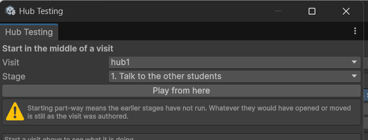
Jumping to stage 3 puts the quest on stage 3. It does not apply what stages 1 and 2 would have done — gates they would have opened are still shut, characters they would have moved are still where the visit put them. The window says so, and the levers at the bottom let you set up whatever you need by hand.
While it is running
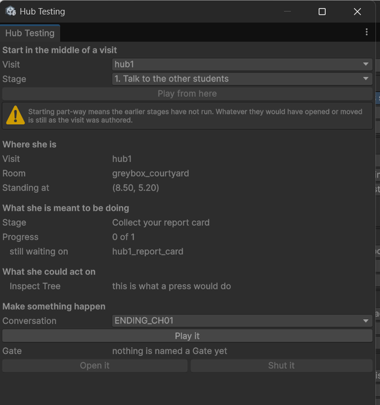
| Section | Tells you |
|---|---|
| Where she is | Which visit is actually loaded, which room, and her exact position — so you can put a coordinate straight into a visit or an event. |
| What she is meant to be doing | The active stage, its progress, and each thing it is still waiting on by name. |
| What she could act on | Everything near enough to be a candidate, and for each one, why it is or is not being offered. |
| Make something happen | Play any conversation on the spot. Open or shut any gate. |
“I press the button and nothing happens”
This is the question the panel exists for. Look at What she could act on:
| It says | Meaning | Fix |
|---|---|---|
| this is what a press would do | It is working. Something else is wrong. | Check the conversation itself — most often a line with no speaker. |
| it has nothing to offer right now | No conversation set, or its state is Inactive, or a gate has it locked with nothing to say. | Set Conversation Id, or check the visit's overrides and gates. |
| she is not facing it | She is beside it, not in front of it. | Approach from the front, or untick Requires Facing if it should be reachable from any side. |
| something is between her and it | A wall or footprint is in the way. | Turn on Blocking and look, or untick Requires Line Of Sight. |
| X is being offered instead | Two things are in reach and the other one won. | Move them apart, or tick Objective Critical on the one that should win. |
| Nothing is near enough | She is not inside its reach area at all. | Turn on Reach and check the circle is where you think. |
Hearing one conversation
In the Conversations window, pick the conversation, pick a visit in the dropdown next to it, and click Hear it. The game starts and plays that conversation as soon as she has control — you do not walk anywhere. If you are already in play mode the button reads Hear it now and plays it immediately.
Starting the game from a tool changes where the game boots to, and puts it back the moment you stop — even if you close Unity in between. You will never accidentally ship a game that opens in the middle of the hub.
13When it is wrong
You do not have to go looking. The tools check continuously while you work.
In the scene
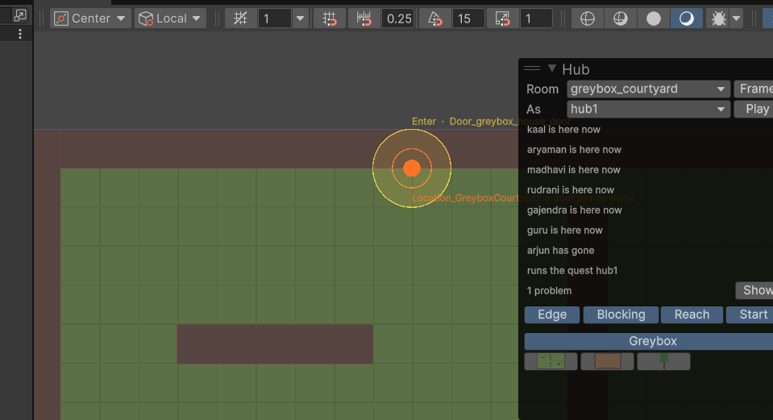
In the list
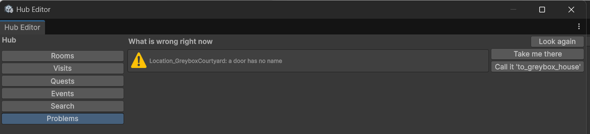
| Message | What it means |
|---|---|
| no room in the Hub scene is this place | You made the record but not the place. Click the fix. |
| this place has no name | Empty Location Id. Click the fix, or type one. |
| a door has no name / two doors are both called ‘x’ | Doors need unique names. Click the fix. |
| door ‘x’ leads to ‘y’, which doesn't exist | The destination room is gone or misnamed. Repick Leads to. |
| 12x8 tiles is smaller than the 15x8.4 the camera shows | Room too small. Enlarge it and pad with impassable scenery. |
| she starts at (x, y), which is inside something solid | The visit's Player Spawn is inside a wall or a prop. Turn on Blocking and move it. |
| ‘x’ is placed more than once | A character is in the cast twice. They can only be in one room. |
| ‘x’ at (…) cannot be walked to from where she starts | Someone is sealed off. Check Blocking for a gap you meant to leave. |
| walking to ‘x’ takes 18s, over the 12s target | Not broken, but further than the game wants a mandatory walk to be. A design call. |
| marks ‘x’, which ‘visit’ neither places nor declares | A stage points a marker at someone not in this visit, or an object no room has. |
| names quest ‘x’, which doesn't exist | The visit's Quest Id is stale. Repick it. |
| the event does nothing | An event with no actions. |
| a walk action for ‘x’ has no route | A Walk Character with an empty route. |
The quick checks — names, references, duplicates — run every time anything changes. The slower ones, which stand a room up and actually try to walk it, run when you open the Problems tab or press Look again. Do that before you hand a visit over.
14Search and rename
Once there are a dozen visits and hundreds of conversations, the useful question stops being "what exists" and becomes "where is this used".
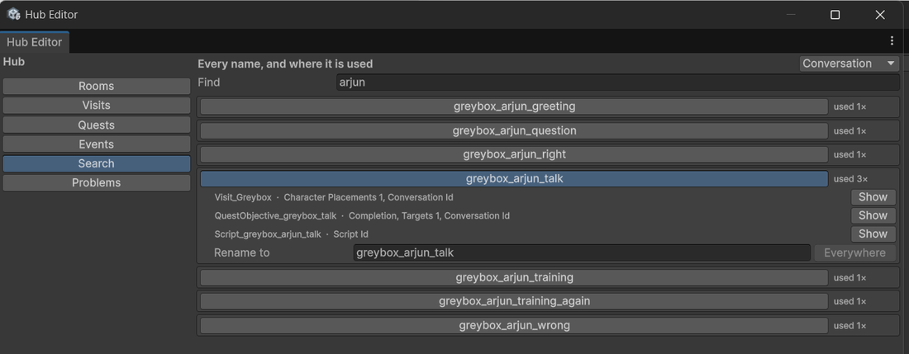
- Hub Editor ▸ Search. Pick a kind in the dropdown at the top right — Conversation, Character, Gate, and so on.
- Type in Find to narrow the list.
- Click a name to see every place it is used, described in words: Visit_Greybox · Character Placements 1, Conversation Id.
- To rename it, type the new name and click Everywhere. Every reference is updated in one go, and it tells you how many places changed.
Typing a new id into one field leaves every other reference pointing at the old name. Nothing will complain loudly and the hub will quietly stop working. Always rename through Everywhere.
Copying a configured object to another room
Select something you have set up — a noticeboard with its conversation, its gate, its offset — and in the Hub panel click Send a copy to another room. It lands in the same group in the room you pick, keeping everything it was given, renamed so two objects never answer to one name.
★Worked example: build a new Gurukul
An artist has just handed you a folder of images for a new, larger Gurukul courtyard. This is the whole job, end to end. Nothing here needs a programmer.
Get the art in
- In the Project window, make Assets/Gurukul/Ground/ and drop
courtyard_floor.pngin it. - Make Assets/Gurukul/Buildings/ and drop the hall, the shrine and the huts in it.
- Make Assets/Gurukul/Nature/ and drop the trees and rocks in.
- Open Assets ▸ Scenes ▸ HubExploration. Expand the Hub panel in the Scene view. You should see three new category tabs with your art in them.
Make the room
- Open Project Astra ▸ Hub Editor, Rooms, + New.
- Set Location Id to
gurukul_courtyard, Display Name to Gurukul Courtyard. - Set Tile Width and Tile Height to your floor art divided by 32. A 1280 × 704 image is 40 × 22 tiles.
- Go to Problems. Click Make an empty room for it.
- Back in the Scene view, pick
gurukul_courtyardin Room. You get a blue rectangle 40 × 22 tiles.
Dress it
- Click the Ground tab, click your floor, check Is says Ground, and click at the room's bottom-left corner.
- Click Buildings, click the hall. Set Is to Object, tick Stops her, and
set Footprint to the size of its base in tiles — for a 6-tile-wide hall whose front wall is
a tile deep, that is
6 × 1. - Click where the hall should stand. Repeat for the shrine and the huts.
- Click Nature, place trees. Hold Shift to keep placing. Tick Keep to hand on the tree so it is in Favourites from now on.
- Turn on Blocking and look. Fix any footprint that is wrong by selecting the object and dragging its collider.
- Pad the edges. Line the outside with trees and rocks so the 40 × 22 room never shows bare ground at its boundary.
Make something to do
- Place a noticeboard. With it selected, click Make it something she can look at in the Hub panel.
- In the Inspector, check Interactable Id reads
noticeboard. Set Verb to Inspect. - Open Project Astra ▸ Conversations. Click + New. Set
Script Id to
gurukul_noticeboard. - Expand Segments, set its size to 1. Check that segment's Text Speed reads
-1. - Expand its Lines, set the size to 2. For each line pick Speaker Id ▸ Narrator and type the text.
- Back on the noticeboard, set Conversation Id to
gurukul_noticeboard. - In the Conversations window, with that script selected, pick a visit and click Hear it. Read it in the real dialogue box. Stop.
People it
- Hub Editor ▸ Visits ▸ + New. Set Visit Id to
gurukul_1. - Set Start Location Id to
gurukul_courtyardand Player Spawn to somewhere open — turn on Blocking first and pick a clear tile. - Expand Character Placements and add one entry per person. For each: pick
Character Id, set Location Id to
gurukul_courtyard, and leave Position for now. - Write each person a conversation (steps 18 to 20) and set it as their Conversation Id in the cast entry.
- In the Scene view, pick
gurukul_1in As. The cast appears. Drag each person where they belong.
Give her something to achieve
- Hub Editor ▸ Quests ▸ + New. Set Quest Id to
gurukul_1. - Click + New stage. Set Display Text to Read the noticeboard. Set
Completion to Inspect Condition and add
noticeboardto its list. - Click + New stage again. Set Display Text to Talk to the other students and tick Show Counter. Set Completion to Talk Condition and add one entry per student, each with the conversation that counts and the character it belongs to.
- Check the order with the arrows.
- Back on the visit, set Quest Id to
gurukul_1. - Set Departure ▸ Destination Map Id to the battle this leads to, and pick a Mode.
Check and play
- Hub Editor ▸ Problems ▸ Look again. Work through anything it reports. Aim for empty.
- Open Project Astra ▸ Hub Testing. Pick
gurukul_1, leave Stage at from the start, click Play from here. - Play it through. Keep the Hub Testing window visible — if something does not respond, it tells you why.
- To retest just the second stage, stop, set Stage to it, and play again.
That is a complete visit: a room built from new art, an object she can read, a cast with things to say, and a quest with two stages and a battle at the end.
AEvery field, in one place
Room
| Field | Meaning |
|---|---|
| Location Id | Its name. Everything refers to the room by this. |
| Display Name | What you read in the tools. Not shown to players. |
| Tile Width / Tile Height | Size in tiles. Also the hard edge of the world. |
Door
| Field | Meaning |
|---|---|
| Name | This door's id, unique within the room. |
| Stands at | Where it is, in tiles. |
| Reads as | Prompt verb: Enter for a way in, Leave for a way out. |
| Leads to | The room beyond. Empty means back the way she came. |
| Arrives at / Facing | Where and which way she appears over there. |
| Which house | For the shared student-house interior. Empty for a room that is only itself. |
| Shut until | Gate that unlocks it. Empty means always usable. |
| Says while shut | Conversation played while locked. Only appears once a gate is set. |
Interactable states
| State | Means |
|---|---|
| Available | Normal. She can act on it. |
| Gated | Locked. Plays its denied conversation. |
| Inactive | Not there as far as she is concerned. No prompt. |
| Exhausted | Used up. Still there, nothing left to give. |
BRules and limits
| Rule | Number |
|---|---|
| Pixels to a tile | 32 |
| What the camera shows | 15 × 8.4 tiles (480 × 270 pixels) |
| Smallest usable room | 15 × 9 tiles |
| Room coordinates | Always start at (0, 0) in the bottom-left |
| How close she must be to act on something | 1 tile |
| Longest a mandatory walk should be | 12 seconds — reported, not enforced |
| Rooms she can be in at once | One |
| Rooms a character can be in per visit | One |
How long things should take you
| Task | Budget |
|---|---|
| Place a decorative prop | 2 clicks, under 5s |
| Place twenty of them | under 30s |
| Make an object interactive and give it a conversation | under 30s, no ids typed |
| Change where a character stands in a visit | under 10s, by dragging |
| Test one specific conversation | under 10s |
| Add a stage to a quest | under 60s |
| Add a room and connect it by a door | under 3 min |
| Find and reach the cause of a problem | under 15s, one click |
If something is taking much longer than this, the tool is at fault rather than you. Say so.
CNaming
| Kind | Shape | Example |
|---|---|---|
| Room | place | gurukul_courtyard |
| Visit | place_number | gurukul_2 |
| Quest | same as its visit | gurukul_2 |
| Stage | visit_whatitis | gurukul_2_report_card |
| Conversation | visit_who_what | gurukul_2_madhavi_first |
| Object | whatitis | noticeboard, report_card |
| Door | to_where | to_hall |
| Gate | what it unlocks | north_road |
| Signal | what happened | saw_the_raid |
| Event | visit_whathappens | gurukul_2_opening |
Lower case, underscores, no spaces, no capitals. Ids are matched exactly, and every tool offers them as dropdowns, so the only thing consistency buys you is being able to find things — but that is worth a lot by visit nine.
DWhen to ask a programmer
Everything above is yours. These are not, and asking is the right move rather than a workaround:
| You want | Why it needs code |
|---|---|
| A new prompt verb | The verbs are a fixed list: Talk, Inspect, Enter, Leave, Report, Depart. |
| A new kind of event action | The eleven kinds are what the game knows how to do. |
| A new way for a stage to finish | Talk, Inspect, Signal and Immediate are the four. |
| A quiz she can get wrong | Not built yet. A branching conversation with an Ask Once choice gets close. |
| Progress that survives quitting | Saving is not wired up yet. |
| A different player character | The protagonist is fixed per scene. |
| A new character entirely | You make them in Project Astra ▸ Data Hub — but their portraits and walking sprite have to exist first. |
| Something to happen on a timer while she walks around | Events run to completion; they do not tick in the background. |
ENever do this
Never rename an id by typing over it. Use Search ▸ Everywhere. Typing leaves every other reference pointing at a name that no longer exists, and nothing will shout about it.
Never delete a conversation asset without checking Search first. Look at who uses it and fix them, or you get silent nothing where a character should speak.
Never edit a shared list by clearing it and rebuilding. The catalogues that index conversations, events and quests are added to, never regenerated. Removing an entry someone else added is very hard to notice.
Never make a room smaller than 15 × 9 tiles. Pad it with impassable scenery instead.
Never move the camera to fit a small room. The camera is fixed on purpose; the room is what changes.
If you tried to do something and could not find it here, that is worth reporting — either the guide is short or the tool is. Both are fixable.